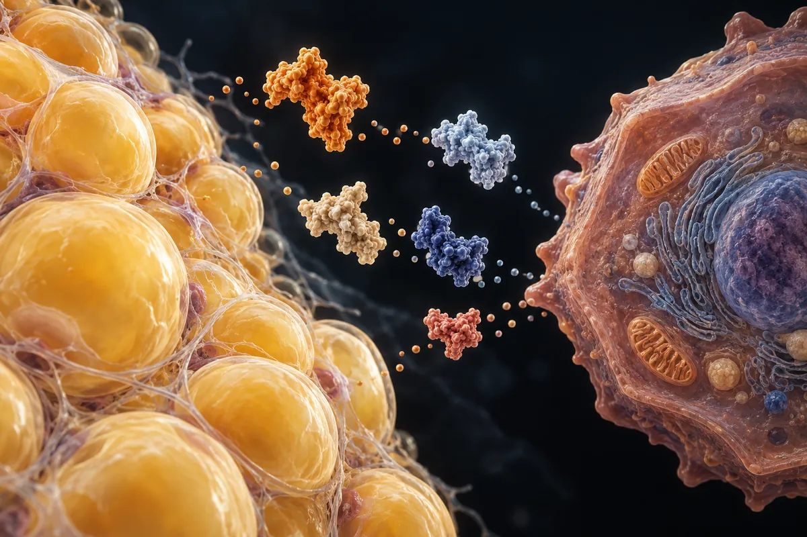

Metabolismo y grasa — exenatida, AICAR, CBL-514 y otros
La exenatida tiene 93 ensayos de fase 3 y ningún registro activo en Brasil. La oxintomodulina, cero de fase 3. El CBL-514 tiene 7 artículos y 16 estudios registrados, todos de la misma empresa

Material experimental. Lea antes de usar cualquier cosa de aquí.
Nada en esta página es recomendación médica, prescripción ni plan de tratamiento. Es una traducción organizada de protocolos que circulan en comunidades de investigación y, cuando existe, de lo que ensayos publicados probaron. Las dos cosas están marcadas de forma diferente — y no son equivalentes.
La mayor parte de los compuestos de aquí no tiene aprobación de la FDA para uso humano. Varios se venden con etiqueta de "uso exclusivo en investigación", lo que significa que no pasaron por control de pureza, esterilidad ni dosificación para consumo por personas. Dosis descrita por la comunidad no es dosis validada: es lo que alguien relató haber hecho.
Hable con un profesional de salud habilitado antes de considerar cualquiera de estos compuestos. Si ya usa alguno y siente algo fuera de lo previsto, busque atención — no espere al próximo examen de rutina.
Resumen
Seis compuestos de peso y metabolismo que faltaban en el sitio: exenatida, oxintomodulina, efinopegdutida, AICAR (acadesina), CBL-514 y L-carnitina. Van del más estudiado al casi nada, y lo que los separa es siempre la misma pregunta: en quién se probó, y para qué.
Seis nombres fuera de la fila de las plumas
El sitio ya tiene semaglutida, tirzepatida, retatrutida, survodutida, cagrilintida, mazdutida y la página de las incretinas de nueva generación. Quedaron fuera la exenatida, aprobada en Estados Unidos en 2005; la oxintomodulina, una hormona del intestino; la efinopegdutida, de MSD; el AICAR, que la tienda de donde saqué la lista describe como imitador del ejercicio; el CBL-514, una inyección para grasa localizada; y la L-carnitina.
Tres salvedades de método. Una: AICAR OR acadesine devuelve la literatura entera de una herramienta de laboratorio, y el número es techo. Para medirlo: (AICAR OR acadesine) AND AMPK devuelve 2.164 de los 2.891 artículos. Dos: la búsqueda de la L-carnitina devuelve registros en los que entra como cotratamiento en ensayos de otra cosa; el mayor de fase 3 es un ensayo de antiviral en VIH. Tres: la oxintomodulina es una hormona que el cuerpo produce, y parte de los registros la mide en la sangre.
Ningún número de esta página proviene de la fuente secundaria del sitio.
Cuánta evidencia existe, compuesto por compuesto
Los números de abajo fueron levantados por mí el 5 de octubre de 2026, en PubMed y en ClinicalTrials.gov. La consulta de cada línea está escrita entera, al lado del número, para que cualquier persona pueda repetirla y contradecirme — y para que el script que reconfirma los recuentos de este sitio pueda ejecutarlas todas.
La columna de condición no es una afirmación de mecanismo: es el campo Condition copiado del mayor registro de fase 3 que la propia búsqueda devolvió. Cuando no hay registro de fase 3, la celda lo dice.
| Compuesto | Condición en los registros de fase 3 | Consulta | Artículos en PubMed | Estudios en ClinicalTrials.gov |
|---|---|---|---|---|
| Exenatida | Type 2 Diabetes Mellitus | exenatide | 4.526 | 378 |
| Oxintomodulina | ningún registro de fase 3 en esta búsqueda | oxyntomodulin | 476 | 10 |
| Efinopegdutida | ningún registro de fase 3 en esta búsqueda | efinopegdutide OR "MK-6024" | 9 | 7 |
| AICAR (acadesina) | Coronary Artery Bypass; Myocardial Infarction; Ventricular Dysfunction, Left; Stroke | AICAR OR acadesine | 2.891 | 5 |
| CBL-514 | Subcutaneous Fat | "CBL-514" | 7 | 16 |
| L-carnitina | Cytomegalovirus Infections; HIV Infections | levocarnitine OR "L-carnitine" | 23.815 | 312 |
Lo que existe de fase 3, y de quién es
El recuento de artículos mide atención académica, no evidencia de desenlace. La tabla de abajo separa lo que tiene ensayo de fase 3 registrado — y muestra el mayor registro que devolvió la búsqueda, con el número de participantes declarado y el patrocinador. Registro no es resultado.
| Compuesto | Consulta | Ensayos registrados de fase 3 | El mayor registro que abrí |
|---|---|---|---|
| Exenatida | (exenatide) AND AREA[Phase]PHASE3 | 93 | NCT01144338 · n = 14.752 · AstraZeneca Type 2 Diabetes Mellitus |
| Oxintomodulina | (oxyntomodulin) AND AREA[Phase]PHASE3 | 0 | — |
| Efinopegdutida | (efinopegdutide OR "MK-6024") AND AREA[Phase]PHASE3 | 0 | — |
| AICAR (acadesina) | (AICAR OR acadesine) AND AREA[Phase]PHASE3 | 1 | NCT00872001 · n = 3.080 · Merck Sharp & Dohme LLC Coronary Artery Bypass, Myocardial Infarction, Ventricular Dysfunction, Left, Stroke |
| CBL-514 | ("CBL-514") AND AREA[Phase]PHASE3 | 3 | NCT07140939 · n = 320 · Caliway Biopharmaceuticals Co., Ltd. Subcutaneous Fat |
| L-carnitina | (levocarnitine OR "L-carnitine") AND AREA[Phase]PHASE3 | 53 | NCT00001082 · n = 505 · National Institute of Allergy and Infectious Diseases (NIAID) Cytomegalovirus Infections, HIV Infections |
Dónde la cuenta no cierra
- La exenatida tiene 93 ensayos de fase 3 y ningún registro activo en Brasil. El mayor es el EXSCEL, de desenlace cardiovascular, con 14.752 participantes. En Estados Unidos, la búsqueda devuelve BYETTA como descontinuado y un genérico sintético aprobado en 2024. Es la que tiene más ensayos de fase 3 en esta página — y no tiene producto registrado en Brasil.
- La oxintomodulina no tiene un solo ensayo de fase 3, en 476 artículos. El mayor registro es de fase 2, de OPKO Health, Inc., con 420 participantes en diabetes tipo 2; el resto es fase 1 o fisiología — la hormona medida después de cirugía bariátrica, de ejercicio, de comida.
- La efinopegdutida está, hasta ahora, en fase 2: 4 registros de fase 2, todos de MSD y todos en hígado graso, y ninguno de fase 3.
- El único ensayo de fase 3 del AICAR fue interrumpido. Con el nombre farmacéutico de acadesina, se probó en 3.080 pacientes de cirugía de revascularización miocárdica, para reducir eventos cardiovasculares y cerebrovasculares. El registro NCT00872001 figura como interrumpido. Ninguno de los 5 registros trata de rendimiento o ejercicio.
- El CBL-514 tiene más registros que artículos: 7 artículos y 16 estudios, todos de la misma empresa, Caliway. De los 3 de fase 3, ninguno tiene situación de concluido — todavía sin reclutar, reclutando. Es el desarrollo ocurriendo ahora, y todavía sin resultado de fase 3.
- La L-carnitina tiene prospecto, para otra cosa. En Estados Unidos, la levocarnitina está aprobada para la deficiencia sistémica primaria de carnitina. En la base de medicamentos registrados en Brasil, la búsqueda no encuentra registro activo con ese principio activo.
Aprobación en Estados Unidos
Para los que tienen nombre de medicamento en Estados Unidos, consulté Drugs@FDA por la API pública de openFDA, el mismo día. La búsqueda está escrita en la tabla; la fecha es la de la presentación original aprobada más antigua que devolvió la búsqueda.
| Compuesto | Búsqueda en openFDA | Solicitudes devueltas | Marcas | Aprobación original más antigua | Situación de mercado |
|---|---|---|---|---|---|
| Exenatida | openfda.generic_name:"EXENATIDE" | 2 | BYETTA, EXENATIDE SYNTHETIC | 28/04/2005 | Discontinued, Prescription |
| L-carnitina | openfda.generic_name:"LEVOCARNITINE" | 12 | CARNITOR, CARNITOR SF, LEVOCARNITINE, LEVOCARNITINE SF | 27/12/1985 | Discontinued, Prescription |
En Brasil
Busqué cada principio activo en los datos abiertos de medicamentos registrados en Brasil, descargados el 5 de octubre de 2026 — 43.596 líneas, contando solo situación Activo, en el principio activo y en el nombre del producto, sin tildes y sin distinguir mayúsculas de minúsculas. La clase terapéutica es la que la propia base declara.
El CBL-514 queda fuera de la tabla: código de desarrollo, sin DCI publicada, no tiene principio activo para buscar.
| Principio activo | Patrón buscado | Registros activos | Clase terapéutica declarada | Productos |
|---|---|---|---|---|
| Exenatida | EXENAT | 0 | — | — |
| Oxintomodulina | OXINTOMOD | 0 | — | — |
| Efinopegdutida | EFINOPEG | 0 | — | — |
| AICAR (acadesina) | ACADESIN | 0 | — | — |
| L-carnitina | CARNITINA | 0 | — | — |
Referencias
- API pública de ClinicalTrials.gov, versión 2 — la base de todos los recuentos de estudio y de fase 3 de esta página.
- E-utilities de PubMed (esearch) — la base de todos los recuentos de artículos de esta página.
- Registro NCT01144338 en ClinicalTrials.gov.
- Registro NCT00872001 en ClinicalTrials.gov.
- Registro NCT07140939 en ClinicalTrials.gov.
- Prospecto de la levocarnitina solución oral en DailyMed — indicación en deficiencia sistémica primaria de carnitina.
- API de openFDA, endpoint drugsfda — las solicitudes y fechas de aprobación de esta página.